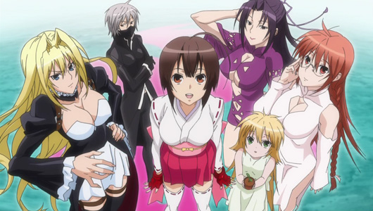
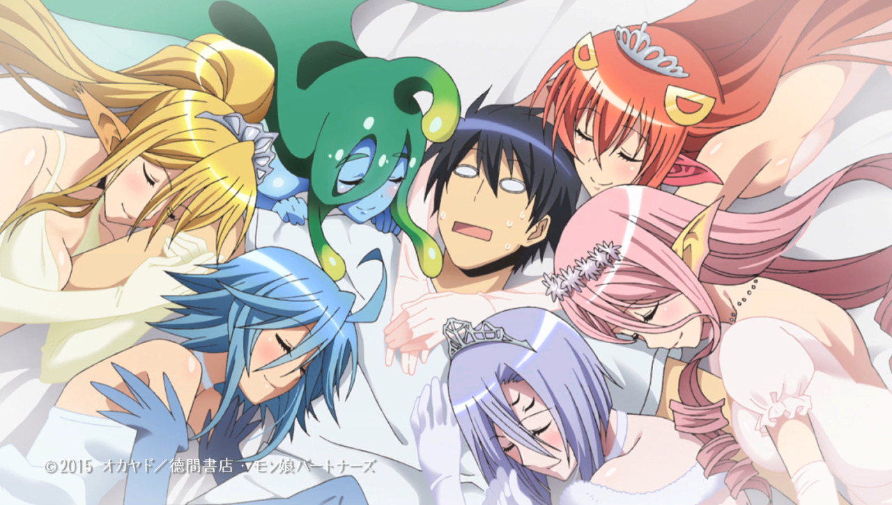
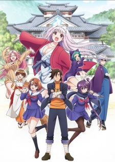
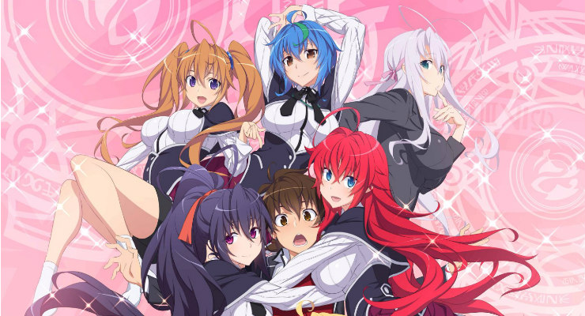

5: Sekirei
Ratings : 🌟 7.1
English Name : Sekirei
Genre :ActionHaremComedyEcchiSuper Power
Seasons : 2
Episodes : 12/13(S01/S02)
Air-Date : 2-July-2008
Watch-Time : 23 min.(Per Ep.)
Synopsis:
Struggling yet brilliant teenager Minato Sahashi has failed his college entrance exams for the second time, resulting in him being regarded as worthless by those around him. However, the course of his seemingly bleak future is altered dramatically when a beautiful, supernatural woman falls from the sky and into his life. That woman, Musubi, is a unique being known as a "Sekirei," a humanoid extraterrestrial with extraordinary abilities. These aliens are known for kissing humans carrying the Ashikabi gene in order to awaken additional latent powers deep within.
Recognizing the potential within the seemingly insignificant youth, Musubi kisses the bewildered Minato, initiating a bond between the two of them. This drags him into the high-stakes world of the Sekirei, where he and his new partner must compete against others in a battle for survival called the "Sekirei Plan." However, unbeknownst to the contestants, there is far more at risk that what the competition initially entailed.
4: Monster Musume no Iru Nichijou
Ratings : 🌟 7.1
English Name : Monster Musume: Everyday Life with Monster Girls
Genre : HaremRomanceComedyEcchiFantasySeinen
Seasons : 1
Episodes : 12
Air-Date : 8-July-2015
Watch-Time : 24 min.(Per Ep.)
Synopsis:
With his parents abroad, Kimihito Kurusu lived a quiet, unremarkable life alone until monster girls came crowding in! This alternate reality presents cutting-edge Japan, the first country to promote the integration of non-human species into society. After the incompetence of interspecies exchange coordinator Agent Smith leaves Kimihito as the homestay caretaker of a Lamia named Miia, the newly-minted "Darling" quickly attracts girls of various breeds, resulting in an ever-growing harem flush with eroticism and attraction.
Unfortunately for him and the ladies, sexual interactions between species is forbidden by the Interspecies Exchange Act! The only loophole is through an experimental marriage provision. Kimihito's life becomes fraught with an abundance of creature-specific caveats and sensitive interspecies law as the passionate, affectionate, and lusty women hound his every move, seeking his romantic and sexual affections. With new species often appearing and events materializing out of thin air, where Kimihito and his harem go is anyone's guess!
3: Yuragi-sou no Yuuna-san
Ratings : 🌟 7.1
English Name : Yuuna and the Haunted Hot Springs
Genre : EcchiHaremComedyRomanceSupernaturalShounen
Seasons : 1
Episodes : 12
Air-Date : 14-July-2018
Watch-Time : 24 min.(Per Ep.)
Synopsis:
Once a hot springs inn, now a boarding house with extraordinarily cheap rent, Yuragi-sou is virtually uninhabited save for a few peculiar residents. As rumor has it, it is haunted by a vile ghost which scares away all potential tenants. Therefore, it is the perfect refuge for Fuyuzora Kogarashi—a broke, homeless psychic seeking an affordable roof to stay under and ghosts to exorcise.
Kogarashi prepares for a face-off against the ghost, only to find out it is not as malicious as the rumors made it out to be. Instead, it is the ghost of a beautiful, silver-haired girl whose only recollection of her life before death is her name: Yuuna. Even more baffling is that the other tenants of Yuragi-sou not only are able to see Yuuna as well, but each has their own supernatural ability.
Amidst the chaos caused by his quirky fellow residents, Kogarashi attempts to uncover the regret that keeps Yuuna anchored to the world of the living, lest she become an evil spirit sentenced to spend her afterlife in hell.
2: Gakuen mokushiroku: HIGHSCHOOL OF THE DEAD

Ratings : 🌟 7.2
English Name : Highschool of the Dead
Genre : ActionHorrorEcchiSupernaturalShounen
Seasons : 1
Episodes : 12
Air-Date : 5-July-2010
Watch-Time : 24 min.(Per Ep.)
Synopsis:
It happened suddenly: The dead began to rise and Japan was thrown into total chaos. As these monsters begin terrorizing a high school, Takashi Kimuro is forced to kill his best friend when he gets bitten and joins the ranks of the walking dead. Vowing to protect Rei Miyamoto, the girlfriend of the man he just executed, they narrowly escape their death trap of a school, only to be greeted with a society that has already fallen.
Soon, Takashi and Rei band together with other students on a journey to find their family members and uncover what caused this overwhelming pandemic. Joining them is Saeko Busujima, the beautiful president of the Kendo Club; Kouta Hirano, an otaku with a fetish for firearms; Saya Takagi, the daughter of an influential politician; and Shizuka Marikawa, their hot school nurse. But will the combined strength of these individuals be enough to conquer this undead apocalypse?
5: High School DxD
Ratings : 🌟 7.4
English Name : High School DxD
Genre : ComedyDemonsEcchiHaremRomanceSchool
Seasons : 4
Episodes : 12(Per Season)
Air-Date : 6-January-2012
Watch-Time : 24 min.(Per Ep.)
Synopsis:
High school student Issei Hyoudou is your run-of-the-mill pervert who does nothing productive with his life, peeping on women and dreaming of having his own harem one day. Things seem to be looking up for Issei when a beautiful girl asks him out on a date, although she turns out to be a fallen angel who brutally kills him! However, he gets a second chance at life when beautiful senior student Rias Gremory, who is a top-class devil, revives him as her servant, recruiting Issei into the ranks of the school's Occult Research club.
Slowly adjusting to his new life, Issei must train and fight in order to survive in the violent world of angels and devils. Each new adventure leads to many hilarious (and risqué) moments with his new comrades, all the while keeping his new life a secret from his friends and family in High School DxD!